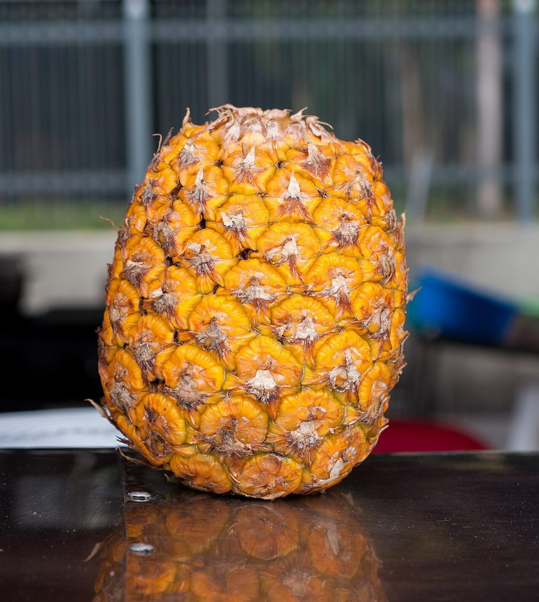
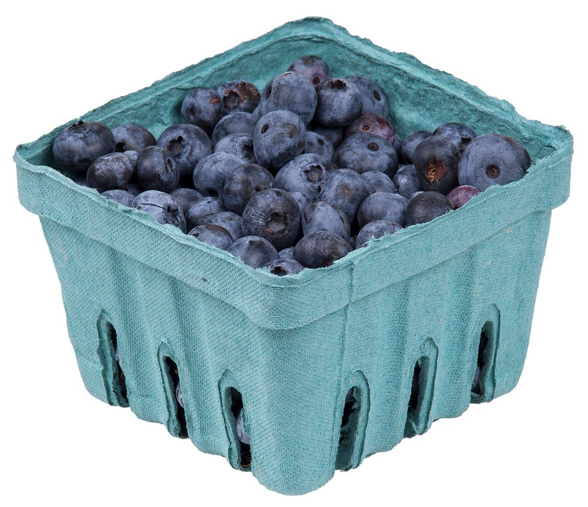

制作側の連想
ペーパーナイフの部位を、配置図にしてみる
ペーパーナイフの部位を図にしたもので、制作側の連想です。お店の理念・由来とは無関係で、実際の製品の仕様を示すものでもありません。 六つの部位に番号をふり、上の図と並べています。
凡例
六つの部位
- 1切っ先先端の丸みを帯びた部分で、封筒の口のすき間に差し入れるところ。
- 2刃平たく薄い本体の部分で、紙を傷めないよう、鋭い切れ味は持たせない。
- 3背刃とは反対側の、厚みのある辺。指を添えて、押さえる向きを決める部分。
- 4つば刃と柄の境目にある金具で、指が刃のほうへ滑らないようにする部分。
- 5柄手で握る部分で、指がかかるよう細い溝をつけた形もある。
- 6柄頭柄の端のふくらみで、吊るすための小さな穴をあけた形もある。
写真(イメージ)
写真(イメージ)


写真はイメージです。お店のものではありません。
ご案内
お店のこと(確認できたものだけ)
| 所在地 | 〒901-0304 沖縄県糸満市西川町３５−１０ |
|---|---|
| 電話 | 準備中 |
| 営業時間 | 準備中 |
| 定休日 | 準備中 |
| ご予約 | 準備中 |
| 駐車場 | 準備中 |
| SNS | Instagram @detoxcafefelicidad |